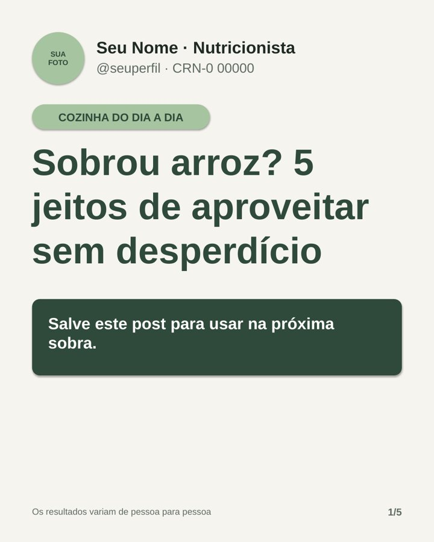
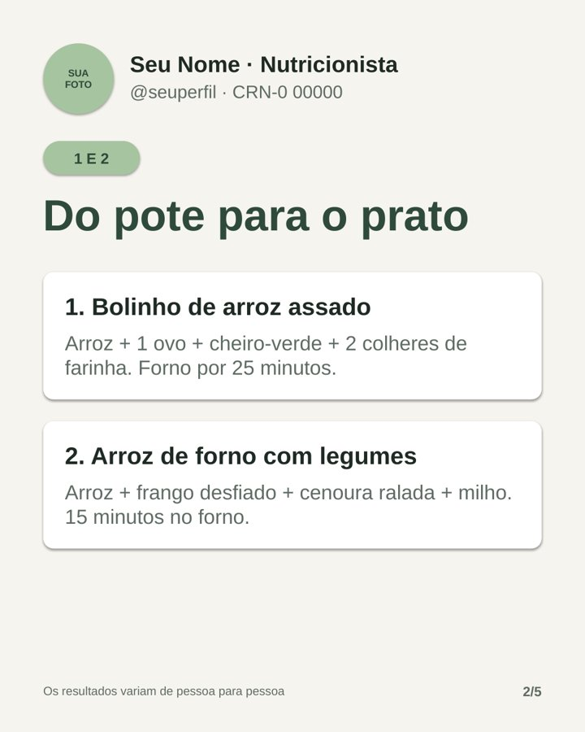
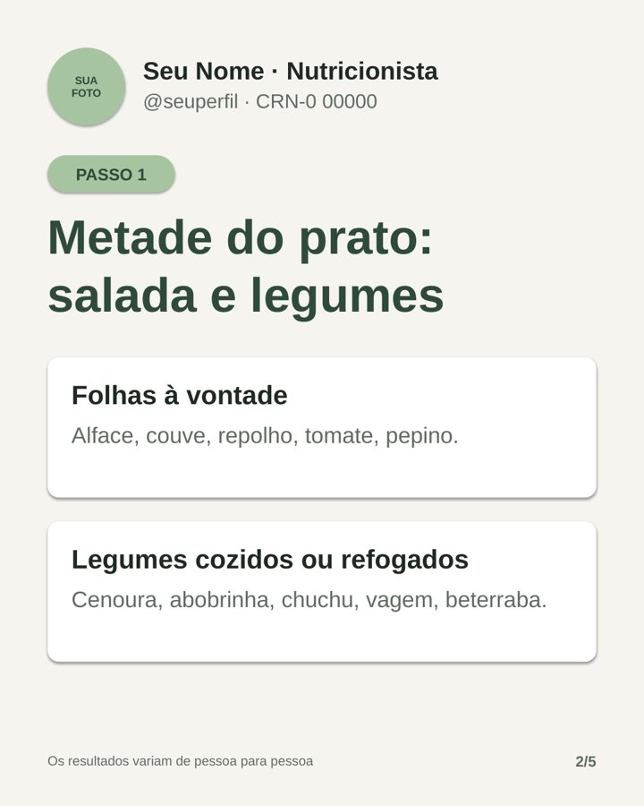
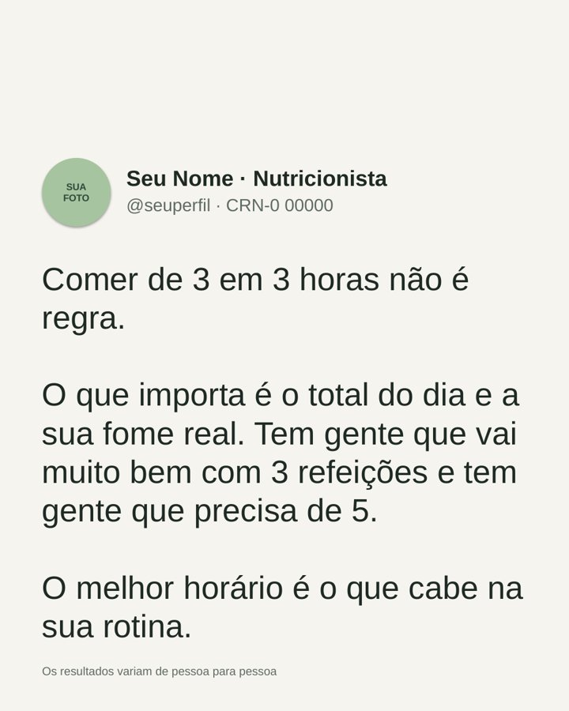
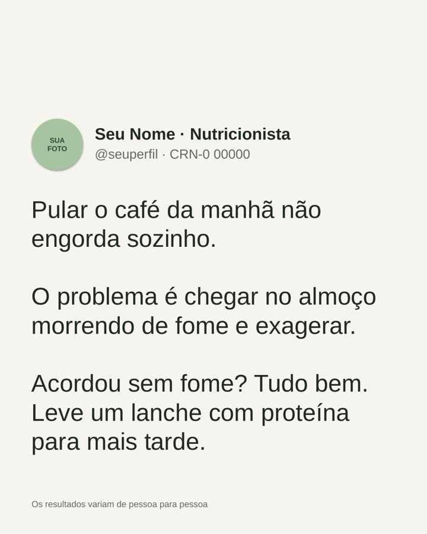
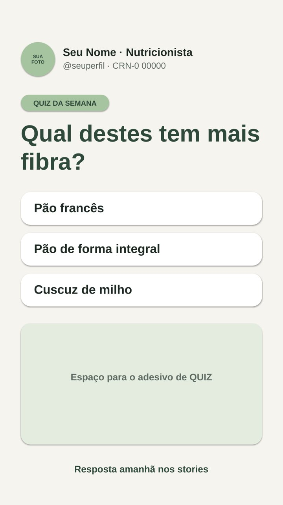

Carrosséis, posts e stories editáveis, com legendas prontas, base científica e linguagem simples. Você troca nome, cores e foto em minutos e posta.
Entrar na lista de esperaQuem entra na lista recebe o preço de lançamento.






PREÇO DE LANÇAMENTO PARA A LISTA DE ESPERA
R$ 47Pagamento único. Acesso aos 30 posts editáveis, às legendas, ao calendário e ao guia de ética.